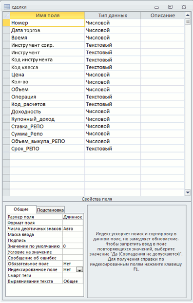

Использование ODBC для экспорта информации
Кнопка
Назначение
Передача данных из таблиц QUIK в другие приложения для их дальнейшего
использования (хранения, обработки). На основе этой функции можно осуществить
непосредственную связь системы QUIK с программами, нуждающимися в оперативной
биржевой информации.
Использование
- Перед началом настройки
экспорта необходимо создать таблицу - получатель данных. Структура этой
таблицы должна повторять структуру той таблицы QUIK, из которой экспортируются
данные. Другими словами, она должна содержать такой же перечень параметров,
как и список заголовков столбцов таблицы QUIK. Перечень параметров таблиц и
тип данных в них приведен в приложении к этому разделу. В качестве примера
приведем настройку экспорта таблицы сделок в таблицу MS Access:

- Создав таблицу, необходимо зарегистрировать ее в качестве источника данных
для ODBC в Панели управления Windows (меню Пуск /
Настройка / Панель управления), пункт «Источники данных ODBC».
- В системе QUIK сделать активной таблицу, из которой будет производиться
экспорт данных и открыть окно настройки экспорта ODBC одним из следующих
способов:
- нажать кнопку на панели инструментов;
- вызвать пункт контекстного меню «Вывод по ODBC»;
- выбрать пункт меню программы Действия/Вывод по ODBC…;
- нажать сочетание клавиш «Ctrl»+«O».
- В списке «Выберите имя источника данных» выберите получателя данных.
Название соответствует тому имени, которое описано в п.2.
- Если для подключения к источнику требуется авторизация пользователя,
введите имя и пароль в соответствующие поля.
- Нажмите кнопку «Присоединиться». В «Списке доступных таблиц» появится
полный перечень таблиц в выбранном источнике.
- Выберите таблицу, в которую будут передаваться данные. В «Списке полей
таблицы» отобразятся поля выбранной таблицы.
- Настройте соответствие между полями таблицы QUIK и полями
таблицы-получателя последовательным выполнением следующих действий над каждым
полем:
- В «Списке параметров» выбрать поле таблицы QUIK.
- Сопоставить ему поле из списка «Поле, соответствующее параметру». В
списке отображаются поля, имеющие тип, совместимый с типом поля в таблице
QUIK. Если искомого поля нет, см. Сообщения об
ошибках.
- Не обязательно настраивать соответствие между всеми полями таблиц.
Достаточно настроить соответствие между полями, содержащими параметры,
планируемые для экспорта. Соответствие между полями, отмеченными
«звездочкой» («*»), является обязательным.
- Чтобы удалить соответствие между двумя полями таблиц, выберите в «Списке
параметров» поле таблицы QUIK и нажмите кнопку «Очистить». Чтобы удалить
соответствие между всеми полями таблиц, нажмите кнопку «Очистить все».
- Если таблица-получатель была выбрана ошибочно, то при выборе другой
таблицы из «Списка доступных таблиц» сохраняется настройка соответствия
между полями, имеющими одинаковое название и тип данных. Для полей с
отличающимися наименованиями или типами данных настройки соответствия
удаляются.
- Назначение настроек экспорта:
- «Чистить таблицу перед выводом» - если флажок установлен, то перед
началом экспорта, при смене сессии, сервера или пользователя старые данные
из таблицы будут удалены; если флажок снят, то новые данные будут замещать
старые по мере поступления.
- «Формальные имена» - если флажок установлен, то при экспорте данных
вместо текстовых значений параметров передаются их системные
идентификаторы, например, вместо наименования инструмента и класса выводятся
их коды в торговой системе, вместо перечислимых типов, таких как
«направленность заявки» – символьные коды (например, «B» – покупка, «S» –
продажа).
- «Вывод после создания» - если флажок установлен, то экспорт данных
начинается одновременно с загрузкой в систему QUIK конфигурации окон,
например, при запуске программы.
- «Вывод при нажатии Ctrl+Shift+O» - при установленном флажке экспорт из
таблицы может быть активизирован нажатием приведенной комбинации клавиш.
- Нажатие кнопки «Начать вывод данных» начинает процедуру экспорта.
-
При использовании экспорта данных из Таблицы текущих торгов убедитесь,
что в настройках получения информации (меню
Система / Настройки / Основные настройки...
, раздел «Программа» / «Сохранение данных») выбрано значение «Данные, отражающие текущее состояние и всю историю изменений».
- Нажатие кнопки «Прекратить» останавливает экспорт данных.
- Нажатие кнопки «Ок» приводит к закрытию окна настройки экспорта, при этом
все сделанные изменения сохраняются. Если процесс экспорта начат, он будет
осуществляться автоматически в фоновом режиме.
- Нажатием кнопки «Отмена» закрывается окно настройки экспорта без
сохранения изменений.
Рекомендации
- Не используйте для названия полей таблиц зарезервированные слова,
например, «money», «group», «order», «number», «date» и т.п.
- Не используйте пробелы в именах таблиц, полей таблиц и путей к таблицам.
- Для экспорта из таблиц QUIK, содержащих параметры с символом «звездочка»
(«*»), рекомендуется устанавливать флажок «Чистить таблицу перед выводом». Тем
самым из таблицы удаляются данные, относящиеся к предыдущим сеансам связи с
сервером.
- Если требуется накапливать в базе данных архив информации, получаемой из
QUIK, то рекомендуется сделать две таблицы одинаковой структуры. Одну из них
использовать для получения данных из QUIK, вторую – для накопления архива,
причем копирование данных в архив осуществлять по окончании торговой сессии,
либо перед началом следующей. Таким образом можно избежать повторной записи
данных, например, при необходимости перезаказать данные заново в системе QUIK.
- Данные из одной таблицы QUIK могут экспортироваться только в одну
таблицу-получатель. Однако, можно настроить в системе QUIK две или более
одинаковые таблицы для вывода в разные приложения.
- Если экспорт данных используется постоянно, установите в настройках
экспорта флажок «Вывод после создания». В этом случае процедура экспорта будет
начинаться автоматически с запуском программы.
- Если для экспорта данных используется несколько таблиц, то для удобства
пользования рекомендуется сделать отдельную вкладку и поместить в ней
таблицы, используемые только для экспорта. Тем самым достигается независимость
настройки экспорта данных от возможных изменений в аналогичной таблице,
используемой для просмотра рыночной информации.
- Если применяется экспорт из нескольких таблиц, то рекомендуется установить
флажок «Вывод при нажатии Ctrl+Shift+O». В этом случае можно начинать вывод
данных из таблиц вручную, одним нажатием этой комбинации клавиш.
- Если в базе данных используется индексация таблиц по ключевому полю, то
для обеспечения уникальности, его следует настраивать по полям QUIK «Номер
заявки» и «Код класса».
- Если в настройках таблицы имеется признак «Показывать нулевые значения»,
то его рекомендуется включить.
См. также Сообщения об ошибках.